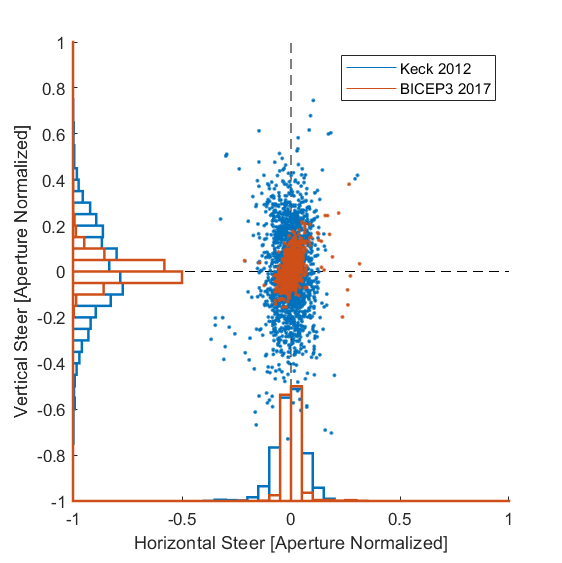
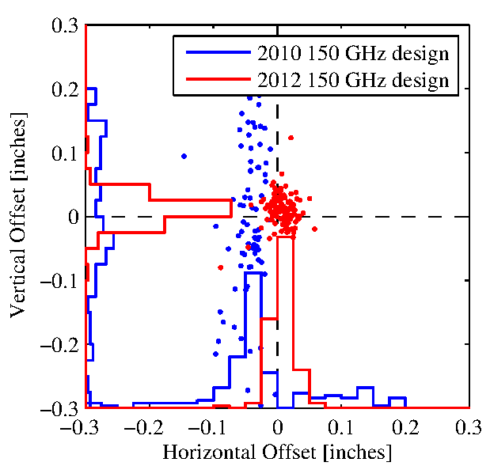

Stripline fab changed from "liftoff" to "etchback" in 2012
New tiles should see reduced beam steer


Left Beam steer of Keck 2012 and BICEP3 2017 where the level of beam steer in millimeters is normalized by the radius of the aperture. Right A similiar plot shown in Figure 12 of the Detector Paper.